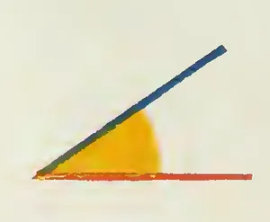
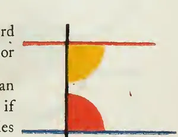

Content of type 'section'

Title Page & Dedication
Half-Title (Leaf 5): BYRNE’S EUCLID. THE FIRST SIX BOOKS OF THE ELEMENTS OF EUCLID, IN WHICH COLOURED DIAGRAMS AND SYMBOLS ARE USED INSTEAD OF LETTERS FOR THE GREATER EASE OF LEARNERS.

Introduction — The Ocular Manifesto
The arts and sciences have become so extensive, that to facilitate their acquirement is of as much importance as to extend their boundaries. Illustration, if it does not shorten the time of study, will at least make it more agreeable. This Work has a greater aim than mere illustration; we do not introduce colours for the purpose of entertainment, or to amuse by certain combinations of tint and form, but to assist the mind in its researches after truth, to increase the facilities of instruction, and to diffuse permanent knowledge.

Book I Definitions (I–XXXV)
I. A point is that which has no parts, or which has no magnitude.

Postulates (I–III) & Axioms (I–XII)
Postulates (Leaf 26, p. xxii)

Elucidations — Angles & Proclean Structure
The twelfth axiom may be expressed in any of the following ways:
Symbols and Abbreviations
On pages xxvii and xxviii, Oliver Byrne publishes the formal operator table governing all six books:
Corrigenda — Faults to Be Corrected
On the final preliminary recto (p. xxix, Leaf 33, signature f), Byrne lists eleven press corrections under the heading Faults to be corrected before reading this Volume: